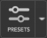

| Using | Features | Links |
Set up the display options for the custom preset style on the Presets button menu.
To open this dialog box, choose Workspace → Preset Style → Edit Custom Preset Settings or choose Edit Custom from the Presets button menu.

Setting the custom style involves selection of options for the style elements that are modified by application of the custom preset, and making settings for how to change the style for that style element. For example, in the General tab, you can select an option for the display of ligands. If you select this option, application of the preset may modify the visibility of ligands; if you deselect it, no changes are made to the visibility of ligands. After selecting the option, you choose whether you want the ligands to be shown or hidden. So if you select the Ligands option and choose none from the option menu, the ligand is hidden when the preset is applied. If you deselect the Ligands option and the ligand is visible, it remains visible when the preset is applied.
The preset style is applied to all atoms in the Workspace that are not in locked entries. So if you want to keep the style of some entries the same even when the preset is applied, you can lock them to prevent any changes being made.
Set general display options: display of atoms, fitting of the Workspace.
Select options for changes to the display of atoms when the preset is applied.
Select this option to change the visibility of ligands, and choose from all (display all ligands) or none (hide all ligands).
Select this option to change the visibility of protein residues, and choose which residues to display from the option menu:
Select this option to change the visibility of water molecules, and choose which waters to display from the option menu:
Select this option to change the visibility of ions, and choose which ions to display from the option menu:
Select this option to change the visibility of receptor hydrogens, and choose which ones to display from the option menu:
Select this option to change the visibility of ligand hydrogens, and choose which ones to display from the option menu:
Zoom in so that the ligand fills most of the Workspace.
Set options for changes to the atom and ribbon representations. For information on setting the parameters of the representations, see the Molecular representation group description in the Preferences Panel topic.
Change the atom and bond style to one of the five available styles: wire frame, tube, thin tube, ball and stick, and CPK.
Change the default atom and bond style to the menu choice. This style is applied to protein residues, and anything else that is not specified below.
Change the atom and bond style for the ligands to the menu choice.
Change the atom and bond style for water molecules to the menu choice.
Change the atom and bond style for ions to the menu choice.
Set up the changes to the display of ribbons to be made when the preset is applied.
Select this option to change the ribbon display , and choose which parts of the ribbons to display from the option menu:
Note that the display of ribbons and the display of the corresponding protein atoms are independent.
Choose the color scheme for the ribbons. This option menu provides a range of properties that can be used to select the color scheme, such as residue properties and secondary structure. Each of these has a predefined set of colors that is applied to the ribbon, coloring the corresponding segments for each residue. The color schemes are explained in Atom Color Schemes.
Choose the ribbon style from one of the seven display styles: Cartoon, Ribbon, Tube, Thin Tube, Curved Line, Calpha Line, and Calpha Tube. You can also choose None to undisplay ribbons.
Set up changes to the atom color scheme to be made when the preset is applied. The color schemes are explained in Atom Color Schemes.
Change the default atom color scheme to the menu choice.
Change the atom color scheme for the ligands to the menu choice.
Change the atom color scheme for the waters to the menu choice.
Change the atom color scheme for the ions to the menu choice.
Set up changes to the atom labels to be made when the preset is applied. The same choices are available on each option menu. Choosing Current Composition allows you to use a custom label, which you can set up by choosing Edit Custom Label from the Apply Labels menu in the Style toolbox. Choosing None removes labels.
Change the atom labels for the proteins to the menu choice.
Change the atom labels for the ligands to the menu choice.
Change the atom labels for the waters to the menu choice.
Change the atom labels for the ions to the menu choice.
Set options for changing the display of noncovalent interactions and contacts when the preset is applied. The criteria for these interactions and contacts can be set in the Non-bonded interactions group of the Preferences Panel.
Change the display to show or hide the interactions that are selected below. The options for the interactions are only displayed when this option is selected. Selecting one of the options shows the interaction; deselecting it hides the interaction. If you select any of the options, an option menu is displayed so you can choose the parts of the structure that the interaction is displayed between.
Select options for display of hydrogen bonds, halogen bonds, salt bridges, and aromatic hydrogen bonds
Select options for display of good, bad, or ugly contacts.
Select options for the display of pi-pi stacking and pi-cation interactions.
Set options for changing the display of molecular surfaces when the preset is applied. These options do not affect the display of other surfaces that are based on calculated 3D properties, such as the electron density.
Select this option to change the display of receptor and ligand molecular surfaces when the preset is applied. The options for the surfaces to display are only displayed when this option is selected. Selecting one of the options shows the surfaces; deselecting it hides the surfaces. If the surface does not exist, it is created.
Change the display of receptor surfaces. When you select this option, the following controls are displayed:
Change the display of ligand surfaces. When you select this option, the following controls are displayed:
Reset all settings in the panel to their defaults.